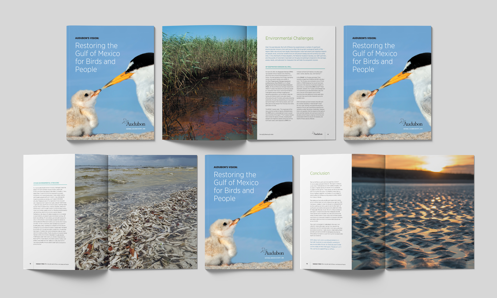

Audubon Gulf Restoration Report
Editorial design for a scientific report on critical bird species and habitats in the Gulf of Mexico affected by the 2010 BP Oil Spill.
For Audubon Louisiana, a chapter of the National Audubon Society, I designed a 92-page scientific report on critical bird species in the Gulf of Mexico affected by the 2010 BP Oil Spill, and the recommended projects to restore the health of birds & habitats in the Gulf Coast region.
- Client
- Audubon Louisiana
- Agency
- Deep Fried Advertising
- Active
- 2018-2019
- Role
- Lead Designer
- Work
- Editorial Design

The report is filled with captivating photography of the featured birds and natural landscapes of the region, along with the perils and damages caused by the oil spill disaster. A major part of the report identifies the priority restoration projects recommended for each state along the gulf coast in order to restore and protect these fragile habitats.
In addition to the full report, an executive summary was created and formatted as a double-gatefold brochure.
The full report and summary were printed for press events and given to legislators and policymakers. It’s available on Audubon’s website.